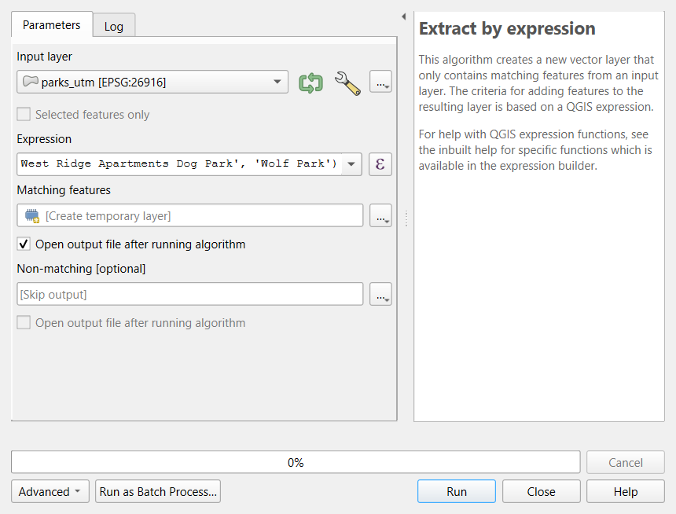

Park Access in Lafayette (QGIS)
Last updated on 2026-10-20 | Edit this page
Overview
Questions
- What share of residents, children and car-free households can walk to a public park in Lafayette and West Lafayette?
- Which neighborhoods have the least access?
- How much do the analyst’s decisions change the answer?
Objectives
- Turn a policy standard (the 10-minute walk) into a measurable definition of access
- Select the features that count as parks with an expression, and document the decision
- Estimate access for several population groups with Buffer, Clip, Intersection and the Field Calculator
- Join results back to tracts, map them, and test the decisions
Why parks, and why walking distance?
Parks are linked to physical activity, mental health, cooler neighborhoods in heat waves and social contact. What matters for everyday use is proximity: many park visits, especially by children and older adults, are on foot, and households without a car cannot easily reach a park across town. Many cities therefore adopt a 10-minute walk standard: every resident within about a half mile (800 m) of a park, the benchmark used by the Trust for Public Land’s ParkScore and by city park plans.
This case study asks, for Lafayette and West Lafayette, Indiana:
- What share of residents lives within 800 m of a public park?
- Are children and households without a car as well served as everyone else?
- Which neighborhoods have the least access?
It is an intermediate case study: it uses only the tools of the Geoprocessing episodes (buffer, dissolve, clip, intersect, areal weighting) and the Foundations episodes on tables and joins. The new work is in the decisions, and in showing how much the answer depends on them.
Decisions that shape the answer
| Decision | Choice here | Alternatives |
|---|---|---|
| What counts as a park | OpenStreetMap features tagged leisure=park,
minus 13 that are not public recreational parks: campus
malls and plazas, intramural fields, a scout camp, a shrine, an
apartment dog park and Wolf Park (admission) |
All OSM parks; the cities’ official park lists; only parks over a minimum size |
| How far is close | 800 m straight line from the park edge | 400 m (5 minutes); network distance along walkable streets; distance to entrances |
| Where people live | Census tracts, with areal weighting inside each tract | Block groups or blocks; dasymetric estimation with land cover |
| Who counts | Residents, children (under 18), households without a car | Older adults, low-income households |
Every row is a judgment call. Write each one down with its reason, and test the ones that might change the answer (a sensitivity analysis).
What the analysis finds
- About 71% of residents in the two cities live within 800 m of a public park, but only about 63% of children, while 78% of households without a car do.
- Access is lowest in Census Tracts 17.01 (east-central Lafayette) and 15.01 (southwest Lafayette), home to more than 8,000 people with median incomes well below the county’s typical level, where almost no one lives within 800 m of a public park.
- Across income thirds there is no simple gradient (about 67%, 72% and 64% from lowest to highest income).
- Dropping the 13 non-park features barely changes the result, but the distance does: at 400 m only about 41% of residents and 34% of children are served.
Limitations
- Straight lines ignore barriers: the Wabash River, railroads and highways. Network distance (Data Analysis module, Network Analysis; Case Studies, Grocery Access Part 2) is more realistic.
- Edges, not entrances, and all parks count the same, whatever their size or facilities.
- Areal weighting spreads people evenly within tracts.
- OpenStreetMap completeness: a park missing from OSM looks like a gap in access. Check low-access tracts against official park lists, imagery or a site visit before recommending anything.
Hands-on
These steps were checked in QGIS 4.0. They use the tools of the Data Analysis module’s Geoprocessing in QGIS episode and the Foundations module’s Tables, Joins and Selections episode; look back there if a step is unfamiliar. The Python version of this case study reaches the same numbers.
If QGIS asks you to choose a transformation
When layers in latitude and longitude (EPSG:4326) are drawn in a project in UTM (EPSG:26916), QGIS may open a window that begins “Multiple operations are possible for converting coordinates”. For this county any of the options is accurate to a few meters: keep the first (highlighted) one and click OK.
Part 1: Load and reproject
- New project, CRS EPSG:26916. Load with Add
Vector Layer, Protocol: HTTP(S), Type:
HTTP/HTTPS/FTP:
https://raw.githubusercontent.com/SpatialTurn/Foundations/main/data/tippecanoe_parks.geojsonhttps://raw.githubusercontent.com/SpatialTurn/Foundations/main/data/tippecanoe_tracts_acs.geojsonhttps://raw.githubusercontent.com/SpatialTurn/CaseStudies/main/data/study_area.geojson
- Reproject all three to EPSG:26916 (Vector > Data
Management Tools > Reproject Layer) and name them
parks_utm,tracts_utmandcity_utm.
Check: 68 parks, 43 tracts, 1 city polygon, all in EPSG:26916.
Part 2: Keep the public parks
Open the attribute table of
parks_utmand read the names. Which are not public recreational parks?-
Processing Toolbox: Extract by expression, input
parks_utm, expression:NOT "name" IN ('Bell Tower Area', 'Centennial Mall', 'Centennial Mall South', 'Memorial Mall', 'Purdue Mall', 'Stadium Mall', 'De Bedout Plaza', 'Spitzer Court', 'Purdue Gold Intramural Fields', 'Cary Camp, Sagamore Council, BSA', 'Our Lady of Lourdes Shrine', 'West Ridge Apartments Dog Park', 'Wolf Park') Name the result
public_parks.

Check: public_parks has
55 features. The expression is your documented
decision: save it in your project notes.
Part 3: The 10-minute walk zone
Vector > Geoprocessing Tools > Buffer: input
public_parks, distance 800 meters,
segments 16, tick Dissolve result. Name it
walk_zone.
Part 4: Residents, children and car-free households in the cities
- On
tracts_utm, add the fieldtract_m2=area($geometry)(Field Calculator). -
Clip
tracts_utmtocity_utmand name ittracts_city. - In
tracts_city, add three decimal fields:-
pop_city=area($geometry) / "tract_m2" * "total_pop" -
kids_city=area($geometry) / "tract_m2" * "pop_under18" -
nocar_city=area($geometry) / "tract_m2" * "hh_no_vehicle"
-
-
Intersection of
tracts_citywithwalk_zone; name itnear_pieces. Addpop_near,kids_nearandnocar_nearwith the same three expressions. - With the Statistics panel, sum each field and
divide: for example the sum of
pop_neardivided by the sum ofpop_city.
Check: about 71% of residents, 63% of children and 78% of households without a car are within 800 m of a public park.
Part 5: Access by tract
- Because the walk zone was dissolved into one feature,
near_pieceshas at most one piece per tract. Join it back: Processing Toolbox, Join attributes by field value, inputtracts_city, fieldGEOID, input 2near_pieces, fieldGEOID, fields to copypop_near, join type Take attributes of the first matching feature only. Name itaccess. - Add
access_pct=coalesce("pop_near", 0) / "pop_city" * 100.coalesce()turns the missing values of tracts with no piece in the zone into 0. - Style
access_pctwith Graduated, manual classes 0 to 25, 25 to 50, 50 to 75 and 75 to 100, a green ramp; drawpublic_parkson top with a dotted fill and the city limits as a dashed line. - Sort the attribute table of
accessbyaccess_pct.

Check: Census Tract 17.01 has 0% and 15.01 about 4%.
Part 6: Test the decisions
- Rerun Parts 3 and 4 with 400 m: about 41% of residents and 34% of children.
- Rerun them with all 68 parks (skip Part 2): about 71.5% of residents, almost unchanged.
The Graphical Modeler (Processing > Graphical Modeler) can chain Parts 2 to 4 into one tool with the distance as an input, so a sensitivity analysis becomes one click per scenario.
Challenge 1: Which decision matters most?
Look at the sensitivity table in the notebook. Which decision changes the result most: the list of parks, or the distance? What would you report to a city council?
The distance: moving from 800 m to 400 m drops the share of residents served from about 71% to about 41%, while removing the 13 non-park features changes it by less than one point. Report the 800 m result as the main figure (it matches the policy standard), state the 400 m result alongside it, and name the neighborhoods with the lowest access, since those findings hold under every choice.
Challenge 2: Why might children have less access?
Children are less well served than residents overall. Suggest two explanations you could check with the data in this case study.
Possible explanations: (1) families with children live
disproportionately in newer subdivisions on the city
edges, farther from the older parks near the center; check by
mapping pop_under18 as a share of residents against access.
(2) Areas with many residents but few children, such as campus
and downtown, are close to parks and raise the overall
residents’ figure; check by comparing access in tracts with high and low
shares of children. Both are about where groups live,
which is what an access measure captures.
- An access measure is a chain of decisions: what counts as a facility, how far is close, where people live
- Buffer from facility edges, dissolve, intersect with tracts and areal-weight each group’s counts
- Report results for groups and places, not only one city-wide number
- A sensitivity analysis shows which decisions matter; state limitations plainly